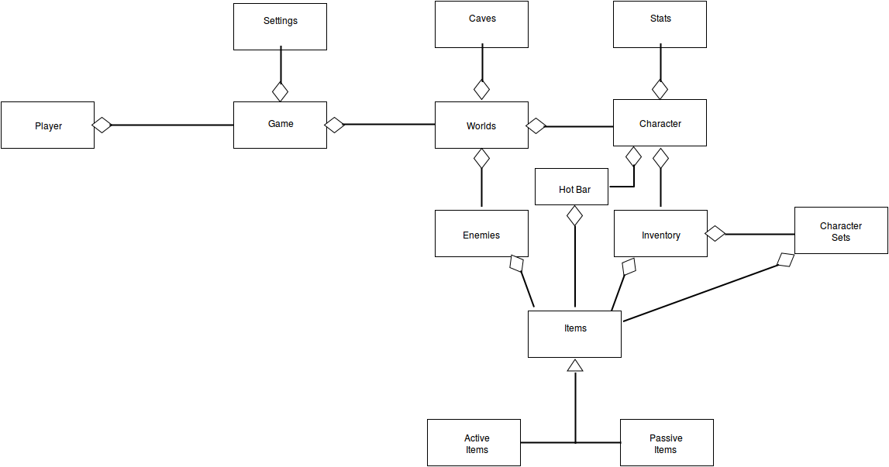

High-level/Functional requirements
- The system shall take the player to the character selection screen when they click the play button
- The system shall generate a random world when the player starts a new game
- All enemies will have a drop rate for all their equipped items.
- The system will keep track of players’ scores and other statistics
- The system shall have a button that opens a link to a website where the player can file a bug report
- The system will contain links to our portfolios on the credits page
- The player will be able to click a play button on the start screen
- The player will use the mouse or keyboard for movement and gameplay
- The player will be able to create a new character or delete/resume a previous character
- The player will be able to select an existing character or new character on the character selection screen
- The player will be able to select a starting character’s equipment and name
- The player will be able to click save and exit buttons from the pause screen
- The player will be able to interact with the items on the screen
- The player will be able to equip items to the character from the inventory
- The player will be able to create loadouts that include equipped active and passive items
- The player will be able to switch between loadouts
- The player will be able to adjust settings like windowed/full screen mode, sound, music, brightness, resolution, etc.
- The system will require minimum specifications of a low-end processor with integrated graphics and 512 MB of RAM.
- The player can equip 10 items in each loadout.
Domain model
